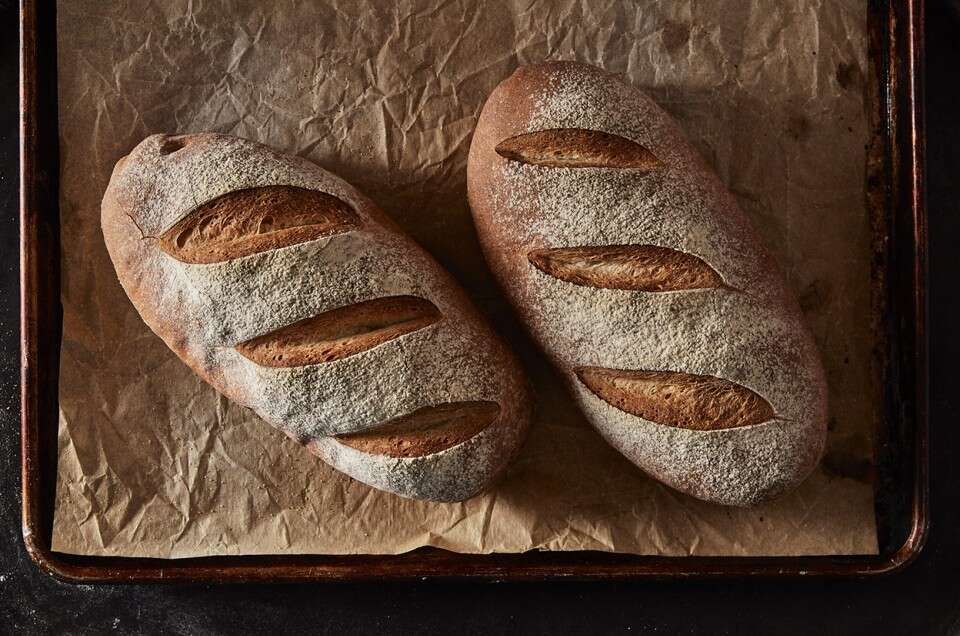

Only five ingredients and simple instructions.
You can have loaf bread in under 3 hours!
Ingredients
- 4 1/2 to 5 cups (540g to 600g) King Arthur Unbleached Bread Flour
- 1 tablespoon (11g) granulated sugar
- 2 1/4 teaspoons instant yeast
- 2 1/2 teaspoons (15g) salt
- 1 2/3 cups (379g) water, lukewarm (90°F to 110°F)
- yellow cornmeal, for coating the pan
Steps
- Weigh your flour; or measure it by gently spooning it into a cup, then sweeping off any excess.
- Stir together all of the ingredients (except the cornmeal) in a large bowl, starting with 4 1/2 cups of the flour. Use a sturdy spoon, or your stand mixer equipped with the beater paddle. Mix until everything comes together in a rough, shaggy mass of dough.
- If you’re kneading the dough by hand, turn it out onto a lightly floured surface, using some of the additional 1/2 cup of flour called for. Fold the far edge of the dough back over on itself towards you, then press it away from you with the heels of your hands. Rotate the dough 90°. Repeat this fold-press-rotate process with a rhythmic, rocking motion for about 6 minutes. When fully kneaded, the dough will be bouncy and smooth.
- If you’re using your stand mixer, switch to the dough hook and knead the dough at medium speed for about 7 minutes, until it’s smooth, elastic, and feels a bit bouncy. If the dough doesn’t form a ball that clears the sides of the bowl, sprinkle in just enough of the additional flour to make this happen.
- Place the dough in a bowl that’s been lightly greased with vegetable oil or cooking spray; the bowl you started with is fine. Cover the bowl with plastic wrap or another airtight cover, and let the dough rise at room temperature until it's doubled in size, about 1 to 2 hours. If your kitchen is particularly cold (below 65°F), place the bowl of dough in your turned-off oven with the oven light on.
- Gently deflate the dough and cut it in half. Pat each half into a rough 6” x 8” oval.
- Working with one piece of dough at a time, grab a short side and fold the dough like a business letter (one short side into the center, the other short side over it). Use the heel of your hand to press the open edge of the “letter” closed. Gently pat and roll the dough into a log about 10” long. Repeat with the remaining piece of dough.
- Place the loaves, seam-side down, on a baking sheet (lined with parchment if desired). Sprinkle the pan (or parchment) generously with cornmeal; this will keep the bread from sticking and give it a crunchy bottom crust.
- Let the loaves rise, lightly covered with greased plastic wrap, for 45 minutes. They should become nicely puffy. Gently poke your index finger into the side of one of the loaves; if the indentation remains, your bread is ready to bake.
- Towards the end of the rising time, preheat the oven to 450°F.
- For extra-crusty crust and a great rise, add steam to your oven as follows: While the oven is preheating, place an empty cast-iron frying pan on the lowest rack. Bring 1 cup of water to a boil in the microwave or on the stovetop.
- When your bread is risen, use a sieve to dust the loaves with a thin coat of flour. Then make three or four 1/2” deep diagonal slashes in each loaf; these slashes will help the bread rise evenly as it bakes. Place the bread in the oven and pour the boiling water into the frying pan below. Quickly shut the oven door. Wear good oven mitts during this process to shield your hands and arms from the steam.
- Bake the bread for 20 to 25 minutes, until the crust is golden brown and a loaf sounds hollow to the touch when you tap it on the bottom. The interior temperature of the bread should register at least 190°F on a digital thermometer.
- Turn the oven off, crack the door open, and allow the bread to remain inside for 5 additional minutes; this helps keep the crust crisp. Remove the bread from the oven and cool it on a rack. It’s best not to cut into the bread until it’s cooled down a bit; cutting into hot bread can negatively affect its texture.
- Store the bread, well-wrapped, at room temperature for a couple of days. Freeze for longer storage.